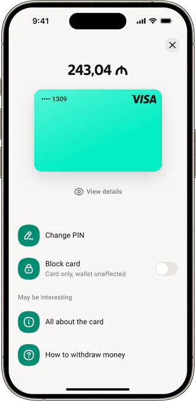

Digital Card
Запуск первой цифровой карты
в азербайджанском e‑wallet
Product designer
5+ years experience
B2C, fintech, crypto

Запуск первой цифровой карты
в азербайджанском e‑wallet
30% → 90% компонентов в коде,
гибкий UI без detach
Новая визуальная система и архитектура,
+49% к конверсии в скачивание